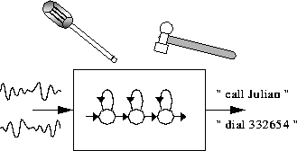

This final chapter of the tutorial part of the book will describe the construction of a recogniser for simple voice dialling applications. This recogniser will be designed to recognise continuously spoken digit strings and a limited set of names. It is sub-word based so that adding a new name to the vocabulary involves only modification to the pronouncing dictionary and task grammar. The HMMs will be continuous density mixture Gaussian tied-state triphones with clustering performed using phonetic decision trees. Although the voice dialling task itself is quite simple, the system design is general-purpose and would be useful for a range of applications.

The system will be built from scratch even to the extent of recording training and test data using the HTK tool HSLAB. To make this tractable, the system will be speaker dependent but the same design would be followed to build a speaker independent system. The only difference being that data would be required from a large number of speakers and there would be a consequential increase in model complexity.
Building a speech recogniser from scratch involves a number of inter-related subtasks and pedagogically it is not obvious what the best order is to present them. In the presentation here, the ordering is chronological so that in effect the text provides a recipe that could be followed to construct a similar system. The entire process is described in considerable detail in order give a clear view of the range of functions that HTK addresses and thereby to motivate the rest of the book.
The HTK software distribution also contains an example of constructing a recognition system for the 1000 word ARPA Naval Resource Management Task. This is contained in the directory RMHTK_V2.1 of the HTK distribution. Further demonstration of HTK's capabilities can be found in the directory HTKDemo. Some example scripts that may be of assistance during the tutorial are available in the HTKTutorial directory.
At each step of the tutorial presented in this chapter, the user is advised to thoroughly read the entire section before executing the commands, and also to consult the reference section for each HTK tool being introduced (chapter 13), so that all command line options and arguments are clearly understood.